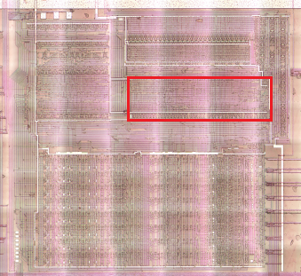
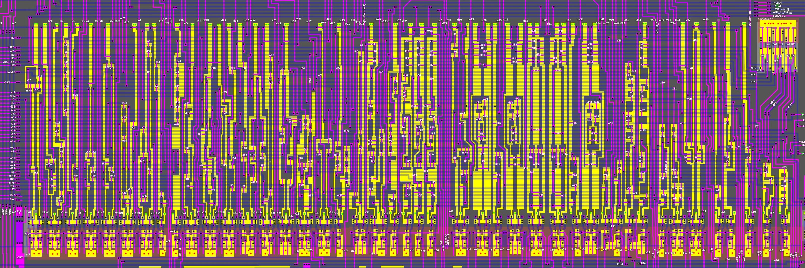
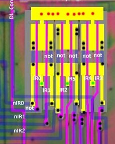
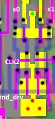

Decoder3

The final stage of the decoder, which generates the x[68:0] control signals for the lower part and the ALU.

Decoder3 Inputs
| Signal | From |
|---|---|
| CLK2 | External |
| CLK4 | External |
| CLK5 | External. Affects x55 |
| nCLK4 | CLK4 Not. Affects x57 |
| a3 | Decoder1 a[3] input |
| d | Decoder1 outputs |
| w | Decoder2 outputs |
| IR | Bottom |
| nIR | IR Nots |
| SeqOut_2 | Sequencer |
IR Nots

Output Drivers

The output drivers act as signal amplifiers and are also used as "domino" logic, to translate dynamic CMOS logic into conventional logic.
Decoder3 Outputs
| Output | Name | CLK | To | Description |
|---|---|---|---|---|
| x0 | CLK2 | ALU Bot | ||
| x1 | CLK2 | ALU Bot | ||
| x2 | CLK2 | internal | ||
| x3 | CLK2 | ALU Top | ||
| x4 | CLK2 | ALU module2 | ||
| x5 | CLK2 | ALU AND combs | ||
| x6 | CLK2 | ALU AND combs | ||
| x7 | CLK2 | ALU AND combs | ||
| x8 | CLK2 | ALU AND combs | ||
| x9 | CLK2 | ALU AND combs | ||
| x10 | CLK2 | ALU Bot | ||
| x11 | CLK2 | ALU Bot | ||
| x12 | CLK2 | ALU Bot | ||
| x13 | CLK2 | internal | ||
| x14 | CLK2 | internal | ||
| x15 | DataOut | ⚠️ CLK4 | Data Bridge | DV to DL |
| x16 | CLK2 | ALU AND combs | ||
| x17 | CLK2 | internal | ||
| x18 | CLK2 | ALU Top | ||
| x19 | CLK2 | ALU Bot, ALU module2 | ||
| x20 | CLK2 | internal | ||
| x21 | CLK2 | ALU Bot | ||
| x22 | CLK2 | ALU Bot | ||
| x23 | CLK2 | ALU Bot | ||
| x24 | CLK2 | ALU Bot | ||
| x25 | CLK2 | ALU module2 | ||
| x26 | CLK2 | ALU Bot | ||
| x27 | CLK2 | ALU Bot | ||
| x28 | ⚠️ CLK4 | ALU Bot Res | ||
| x29 | ⚠️ CLK4 | ALU Bot Res | ||
| x30 | CLK2 | internal | ||
| x31 | CLK2 | internal | ||
| x32 | CLK2 | internal | ||
| x33 | CLK2 | Bottom | Set abus to 0 | |
| x34 | CLK2 | internal | ||
| x35 | CLK2 | Bottom | Save A to bbus | |
| x36 | CLK2 | internal | ||
| x37 | DL_Control2, ALU_to_DL | ⚠️ CLK4 | Data Latch | 1: Save ALU result to DataLatch |
| x38 | ⚠️ CLK4 | Bottom | Load A from fbus | |
| x39 | ⚠️ CLK4 | Bottom | Load H from fbus | |
| x40 | ⚠️ CLK4 | Bottom | Load L from ebus | |
| x41 | CLK2 | Sequencer | ||
| x42 | CLK2 | Bottom | H/L to dbus/cbus | |
| x43 | CLK2 | Bottom | Save H to bbus | |
| x44 | CLK2 | Bottom | Save L to bbus | |
| x45 | CLK2 | Bottom | D/E to dbus/cbus | |
| x46 | CLK2 | Bottom | Save D to bbus | |
| x47 | CLK2 | Bottom | Save E to bbus | |
| x48 | ⚠️ CLK4 | Bottom | Load D from fbus | |
| x49 | ⚠️ CLK4 | Bottom | Load B from fbus | |
| x50 | ⚠️ CLK4 | Bottom | Load E from ebus | |
| x51 | ⚠️ CLK4 | Bottom | Load C from ebus | |
| x52 | CLK2 | Bottom | B/C to dbus/cbus | |
| x53 | CLK2 | Bottom | Save B to bbus | |
| x54 | CLK2 | Bottom | Save C to bbus | |
| x55 | CLK2 | Bottom | ⚠️ Affected by CLK5 (output is nor(res,CLK5) instead not(res). adl/adh -> ebus/fbus |
|
| x56 | ⚠️ CLK4 | Bottom | TempLow(G)/TempHigh(K) to ebus/fbus | |
| x57 | CLK2 | Bottom | ⚠️ Affected by nCLK4 (output is nor(res,nCLK4) instead not(res). ALU Res to ebus/fbus |
|
| x58 | CLK2 | Bottom | Save TempLow(G) to bbus | |
| x59 | CLK2 | Bottom | Load TempHigh(K) | |
| x60 | CLK2 | Bottom | Load TempLow(G) | |
| x61 | LoadSP | CLK2 | Bottom (twice) | Load SP Register. The signals x62 and x63 indicate exactly what to load. |
| x62 | CLK2 | Bottom | adl/adh to SPL/SPH | |
| x63 | CLK2 | Bottom | zbus/wbus to SPL/SPH | |
| x64 | CLK2 | internal | ||
| x65 | CLK2 | Bottom | SPL/SPH to cbus/dbus | |
| x66 | CLK2 | internal | ||
| x67 | CLK2 | Bottom | adl/adh to PCL/PCH | |
| x68 | LoadPC | CLK2 | Bottom (twice) | Load PC Register. The signals w36 (⚠️ w36!) and x67 indicate exactly what to load. |
(Outputs not marked as internal can still be used internally, I just did not mark it unnecessarily).
Nand Trees
| Tree | Gekkio | Paths |
|---|---|---|
| x0 | alu_rotate_shift_left | {nIR3,x20} {nIR3,nIR4,x17} |
| x1 | alu_rotate_shift_right | {IR3,x20} {IR3,x17} |
| x2 | alu_set_or | {w24} {IR5,IR4,nIR3,w3} |
| x3 | alu_sum | {x10} {w37} {x11} {w8} {w9} {x22} {w23} |
| x4 | alu_logic_or | {w5} {d8} {d41} {x2} {d14} {x26} |
| x5 | alu_rlc | {x20,nIR3,nIR4} |
| x6 | alu_rl | {x20,nIR3,IR4} |
| x7 | alu_rrc | {x20,IR3,nIR4} |
| x8 | alu_rr | {x20,IR3,IR4} |
| x9 | alu_sra | {x17,IR3,nIR4} |
| x10 | alu_sum_pos_hf_cf | {w23} {w15} {w19} {x23} |
| x11 | alu_sum_neg_cf | {x27} {x24} |
| x12 | alu_sum_neg_hf_nf | {x24} {x27} {IR0,w37} |
| x13 | regpair_wren | {d58} {d88} {w16} |
| x14 | alu_to_reg | {d41} {d14} {w37} |
| x15 | oe_rbus_to_pbus | {w6,d41} {w6,w4} {w6,d14} {w6,d38} {w6,w14} {w6,w21} |
| x16 | alu_swap | {x17,nIR3,IR4} |
| x17 | cb_20_to_3f | {d42,IR5} |
| x18 | alu_xor | {w3,IR3,nIR4,IR5} |
| x19 | alu_logic_and | {w10} {nIR3,nIR4,IR5,w3} |
| x20 | rotate | {d25} {d42,nIR5} |
| x21 | alu_ccf_scf | {d34,IR4,IR5} |
| x22 | alu_daa | {d34,nIR3,nIR4,IR5} |
| x23 | alu_add_adc | {w3,nIR4,nIR5} |
| x24 | alu_sub_sbc | {w3,IR4,nIR5} |
| x25 | alu_b_complement | {w12} {x24} {x26} {x27} |
| x26 | alu_cpl | {d34,IR3,nIR4,IR5} |
| x27 | alu_cp | {w3,IR3,IR4,IR5} |
| x28 | wren_cf | {d34,w38} {d42,w38} {w3,w38} {IR4,IR5,d58,w38} {x10,w38} |
| x29 | wren_hf_nf_zf | {w12,w38} {x28,w38} {w37,w38} |
| x30 | op_add_sp_e_sx10 | {w9,nIR4} |
| x31 | op_add_sp_e_s001 | {w23,nIR4} |
| x32 | op_alu_misc_a | {d34,nIR4} {d34,nIR5} |
| x33 | op_dec8 | {IR0,w37} |
| x34 | alu_reg_to_rbus | {w3} {d41} {a3} |
| x35 | oe_areg_to_rbus | {x34,IR0,IR1,IR2} {w14} {w4} {w37,IR3,IR4,IR5} {d38,IR4,IR5} {x32} |
| x36 | cb_wren_r | {d42} {w10} {w24} |
| x37 | oe_alu_to_pbus | {w8} {w6,d42} {w6,w10} {w6,w37} {w6,w24} {x30} {x31} |
| x38 | wren_a | {x32,w38} {x36,IR0,IR1,IR2,w38} {w38,d8} {w38,w5} {w38,x14,IR3,IR4,IR5} {w38,d58,IR4,IR5} {w38,w3,nIR5} {w38,w3,nIR4} {w38,w3,nIR3} |
| x39 | wren_h | {IR5,w13,w38} {x36,nIR0,nIR1,IR2,w38} {w38,x64} {w38,w19} {w38,x14,nIR3,nIR4,IR5} {w38,x13,nIR4,IR5} |
| x40 | wren_l | {IR5,w13,w38} {x36,IR0,nIR1,IR2,w38} {w38,x66} {w38,w15} {w38,x14,IR3,nIR4,IR5} {w38,x13,nIR4,IR5} |
| x41 | op_reti_s011 | {d83,IR0,IR4} |
| x42 | oe_hlreg_to_idu | {w13,IR5} {w16,nIR4,IR5} {w22} |
| x43 | oe_hreg_to_rbus | {x34,nIR0,nIR1,IR2} {IR5,nIR4,d38} {IR5,nIR4,w19} {IR5,nIR4,nIR3,w37} |
| x44 | oe_lreg_to_rbus | {x34,IR0,nIR1,IR2} {IR5,nIR4,w21} {IR5,nIR4,w15} {IR5,nIR4,IR3,w37} |
| x45 | oe_dereg_to_idu | {IR4,nIR5,w16} {IR4,nIR5,w13} |
| x46 | oe_dreg_to_rbus | {x34,nIR0,IR1,nIR2} {nIR5,IR4,d38} {nIR5,IR4,w19} {nIR5,IR4,nIR3,w37} |
| x47 | oe_ereg_to_rbus | {x34,IR0,IR1,nIR2} {nIR5,IR4,w21} {nIR5,IR4,w15} {nIR5,IR4,IR3,w37} |
| x48 | wren_d | {x36,nIR0,IR1,nIR2,w38} {IR4,nIR5,x13,w38} {IR4,nIR5,x14,nIR3,w38} |
| x49 | wren_b | {x36,nIR0,nIR1,nIR2,w38} {nIR4,nIR5,x13,w38} {nIR4,nIR5,x14,nIR3,w38} |
| x50 | wren_e | {x36,IR0,IR1,nIR2,w38} {IR4,nIR5,x13,w38} {IR4,nIR5,x14,IR3,w38} |
| x51 | wren_c | {x36,IR0,nIR1,nIR2,w38} {nIR4,nIR5,x13,w38} {nIR4,nIR5,x14,IR3,w38} |
| x52 | oe_bcreg_to_idu | {w29} {nIR4,nIR5,w13} {nIR4,nIR5,w16} |
| x53 | oe_breg_to_rbus | {x34,nIR0,nIR1,nIR2} {nIR4,nIR5,d38} {nIR4,nIR5,w19} {nIR4,nIR5,nIR3,w37} |
| x54 | oe_creg_to_rbus | {x34,IR0,nIR1,nIR2} {nIR4,nIR5,w21} {nIR4,nIR5,w15} {nIR4,nIR5,IR3,w37} |
| x55 | oe_idu_to_uhlbus | {w13} {w16} |
| x56 | oe_wzreg_to_uhlbus | {d58} {d88} |
| x57 | oe_ubus_to_uhlbus | {d42} {x64} {x66} {w5} {d8} {w15} {w19} {x14} {w10} {w24} {x32} {w3} |
| x58 | oe_zreg_to_rbus | {w8} {nIR3,IR4,IR5,w37} {w23} {d8} {w5} {d14} {x34,nIR0,IR1,IR2} |
| x59 | wren_w | {x30} {d60} {w18,SeqOut_2} {w8} |
| x60 | wren_z | {w8} {w17} {w39,w18} {d60} {x31} |
| x61 | wren_sp | {x62} {x63} |
| x62 | oe_idu_to_spreg | {w16,IR4,IR5} {w30} {d62} |
| x63 | oe_wzreg_to_spreg | {d88,IR4,IR5} {d64} |
| x64 | op_ld_hl_sp_e_s010 | {w9,IR4} |
| x65 | oe_spreg_to_idu | {w30} {w16,IR4,IR5} |
| x66 | op_ld_hl_sp_e_s001 | {w23,IR4} |
| x67 | oe_idu_to_pcreg | {d81} {w25} {w2} |
| x68 | wren_pc | {d93} {d92} {w36} {x67} |